Extras: Simulink Basics Tutorial - Block Libraries
Contents
Simulink contains a large number of blocks from which models can be build. These blocks are arranged in Block Libraries which are accessed in the main Simulink window shown below
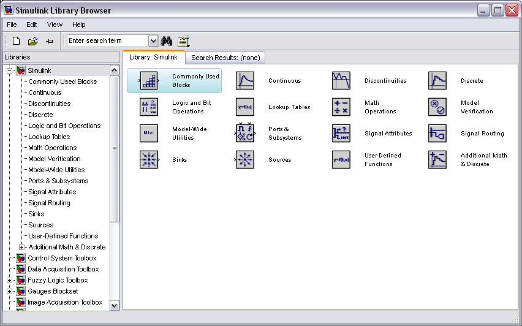
Each icon in the main Simulink window can be double clicked to bring up the corresponding block library. Blocks in each library can then be dragged into a model window to build a model.
Commonly Used Blocks
Commonly Used Blocks are used to list a lot of blocks which are usually used. Double-click on the Commonly Used Blocks icon in the main Simulink windows to bring up the Commonly Used window.
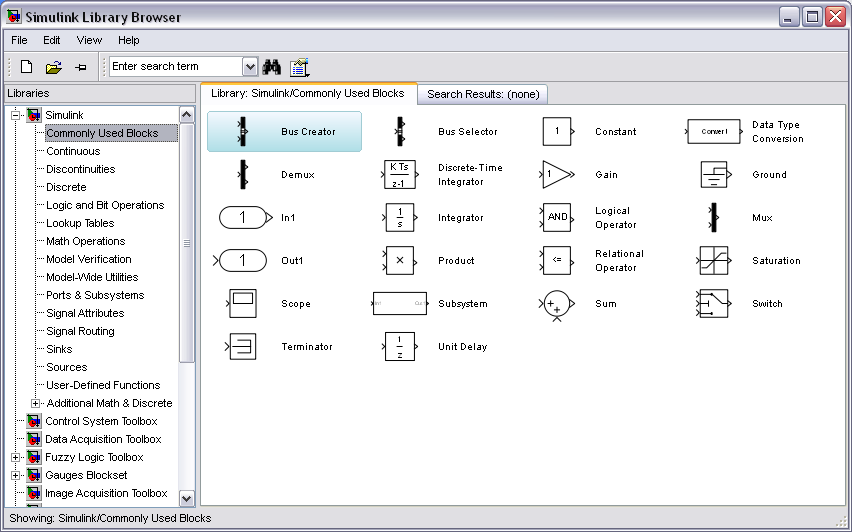
Bus Creator
The Bus Creator block combines a set of signals into a bus.
Bus Selector
The Bus Selector block outputs a specified subset of the elements of the bus at its input. The block can output the specified elements as separate signals or as a new bus.
Constant
The Constant block generates a real or complex constant value. The constant output value is displayed in the middle of the block, with a default value of 1.
In order to examine these blocks, create a new model window (select New from the File menu in the Simulink window or hit Ctrl+N).
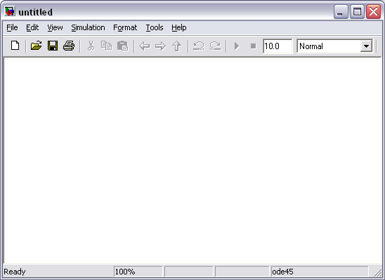
To use this block, drag it from the Commonly Used Blocks window into your new model window.
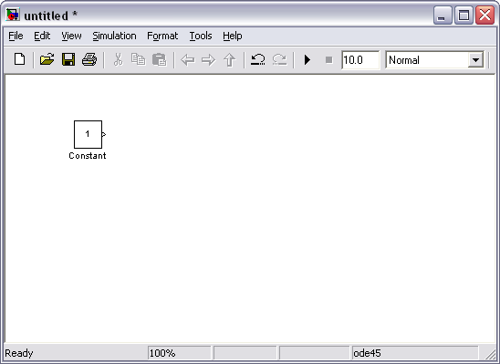
To change the constant output value, double-click on the block in your model window to bring up the following dialog box.
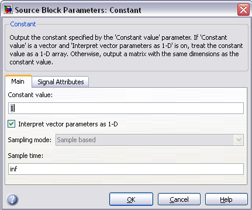
Change the constant value field from 1 to some other value, say, 5, and close the dialog box. Your model window will reflect the update by displaying a 5 in the middle of the constant block.
Data Type Conversion
The Data Type Conversion block converts an input signal of any Simulink data type to the data type you specify for the Output data type parameter. The input can be any real- or complex-valued signal.
Demux, Mux
The Mux (Multiplexer) block is used to combine two or more scalar signals into a single vector signal. Similarly, a Demux (Demultiplexer) block breaks a vector signal into scalar signal components. The number of vector components must be specified in each case. For an example of the use of a Mux block see the Bus Suspension Modeling in Simulink example.
Discrete-Time Integrator
This is the discrete time approximation of a continuous-time integrator. The approximation method can be specified as well as the initial condition and saturation limits.
Gain
The Gain block multiplies the input by a constant value (gain). The input and the gain can each be a scalar, vector, or matrix.
Ground
The Ground block connects to blocks whose input ports do not connect to other blocks.
In1
Inport blocks are the links from outside a system into the system.
Integrator
The output of the Integrator is the integral of the input. An initial condition can be specified, as well as saturation limits. This block is very useful for modeling systems in Simulink.
Logical Operator
The Logical Operator block performs the specified logical operation on its inputs. An input value is TRUE (1) if it is nonzero and FALSE (0) if it is zero.
Out1
Outport blocks are the links from a system to a destination outside the system.
Product
By default, the Product block outputs the result of multiplying two inputs: two scalars, a scalar and a nonscalar, or two nonscalars that have the same dimensions.
Relational Operator
By default, the Relational Operator block compares two inputs using the Relational operator parameter that you specify. The first input corresponds to the top input port and the second input to the bottom input port.
Saturation
The Saturation block imposes upper and lower limits on an input signal.
Scope
The Scope block displays inputs signals with respect to simulation time.
Subsystem
A Subsystem block represents a subsystem of the system that contains it. The Subsystem block can represent a virtual subsystem or a nonvirtual subsystem.
Sum
The Sum block performs addition or subtraction on its inputs. This block can add or subtract scalar, vector, or matrix inputs. It can also collapse the elements of a signal.
Switch
The Switch block passes through the first input or the third input based on the value of the second input. The first and third inputs are called data inputs. The second input is called the control input.
Terminator
Use the Terminator block to cap blocks whose output ports do not connect to other blocks.
Unit Delay
The Unit Delay block holds and delays its input by the sample period you specify. This block is equivalent to the z-1 discrete-time operator.
Vector Concatenate
The Concatenate block concatenates the signals at its inputs to create an output signal whose elements reside in contiguous locations in memory.
Continuous
Continuous Blocks are elements of continuous-time dynamic systems. Double-click on the Continuous icon in the main Simulink window to bring up the Continuous window.
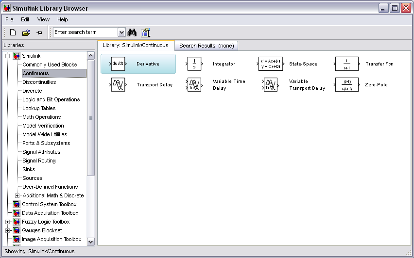
Derivative
The output is equal to the derivative of the input.
Integrator Limited
The Integrator Limited block is identical to the Integrator block with the exception that the output of the block is limited based on the upper and lower saturation limits.
Integrator, Second-Order, Integrator, Second-Order Limited
The Second-Order Integrator block and the Second-Order Integrator Limited block solve the second-order initial value problem
PID Controller
The PID Controller block output is a weighted sum of the input signal, the integral of the input signal, and the derivative of the input signal. The weights are the proportional, integral, and derivative gain parameters.
PID Controller (2DOF)
The PID Controller (2DOF) block generates an output signal based on the difference between a reference signal and a measured system output.
State Space
A, B, C, and D matrices can be specified to create a LTI state space system. Inputs and outputs may be vector signals depending on the sizes of the matrices.
Transfer Function
Numerator and denominator polynomials can be specified to create a standard SISO LTI system transfer function.
Transport Delay
The Transport Delay block delays the input by a specified amount of time. You can use this block to simulate a time delay. The input to this block should be a continuous signal.
Variable Time Delay, Variable Transport Delay
The Variable Transport Delay and Variable Time Delay appear as two blocks in the Simulink block library. However, they are the same Simulink block with different settings of a Select delay type parameter. Use this parameter to specify the mode in which the block operates.
Zero-Pole
The Zero-Pole block models a system that you define with the zeros, poles, and gain of a Laplace-domain transfer function. This block can model single-input single output (SISO) and single-input multiple-output (SIMO) systems.
Discontinuities
Discontinuities Blocks are elements of discontinuous-time dynamic systems. Most of these have special-purpose applications and will not be used in the tutorials. Only the most relevant Discontinuities blocks will be discussed here. Double-click on the Discontinuities icon in the main Simulink window to bring up the Discontinuities window.
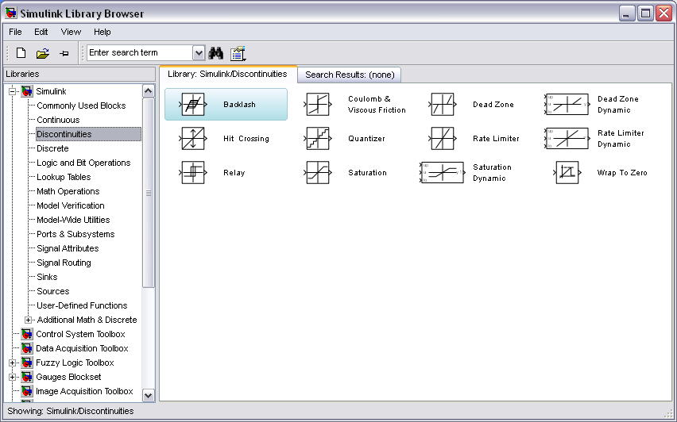
Backlash
The Backlash block implements a system in which a change in input causes an equal change in output. . However, when the input changes direction, an initial change in input has no effect on the output.
Coulomb & Viscous Friction
The Coulomb and Viscous Friction block models Coulomb (static) and viscous (dynamic) friction. The block models a discontinuity at zero and a linear gain otherwise.
Dead Zone
The Dead Zone block generates zero output within a specified region, called its dead zone.
Dead Zone Dynamic
The Dead Zone Dynamic block dynamically bounds the range of the input signal, providing a region of zero output.
Hit Crossing
The Hit Crossing block detects when the input reaches the Hit crossing offset parameter value in the direction specified by the Hit crossing direction property.
Quantizer
The Quantizer block passes its input signal through a stair-step function so that many neighboring points on the input axis are mapped to one point on the output axis.
Rate Limiter
The Rate Limiter block limits the first derivative of the signal passing through it. The output changes no faster than the specified limit.
Rate Limiter Dynamic
The Rate Limiter Dynamic block limits the rising and falling rates of the signal.
Relay
The Relay block allows its output to switch between two specified values. When the relay is on, it remains on until the input drops below the value of the Switch off point parameter. When the relay is off, it remains off until the input exceeds the value of the Switch on point parameter. The block accepts one input and generates one output.
Saturation Dynamic
The Saturation Dynamic block bounds the range of an input signal to upper and lower saturation values.
Wrap To Zero
The Wrap To Zero block sets the output to zero when the input is above the Threshold value. However, the block outputs the input when the input is less than or equal to the Threshold.
Discrete
Discrete Blocks are elements of discrete time dynamic systems. Double-click on the Discrete icon in the main Simulink window to bring up the Discrete window.
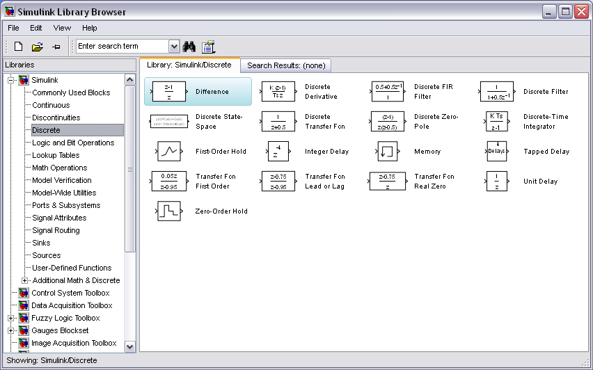
Delay
The Delay block delays an input u according to the Delay length parameter, which you specify on the dialog box, or a delay length that a signal supplies to the d input port.
Difference
The Difference block outputs the current input value minus the previous input value.
Discrete Derivative
The Discrete Derivative block computes an optionally scaled discrete time derivative.
Discrete Filter
This is a discrete-time filter in rational function form. Vectors containing coefficients of the polynomials in z^-1 are specified.
Discrete FIR Filter
The Discrete FIR Filter block independently filters each channel of the input signal with the specified digital FIR filter. The block can implement static filters with fixed coefficients, as well as time-varying filters with coefficients that change over time.
Discrete State-Space
This is a discrete-time dynamic system in state-space form. A, B, C, and D matrices can be specified, as well as initial conditions.
Discrete Transfer Fcn
This is the standard form of a SISO LTI discrete time system. The transfer function polynomials are represented as coefficient vectors in terms of z.
Discrete Zero-Pole
A discrete-time transfer function can be represented as list of z-plane poles and zeros. The gain can also be specified.
First-Order Hold
The First-Order Hold block implements a first-order sample-and-hold that operates at the specified sampling interval. This block has little value in practical applications and is included primarily for academic purposes.
Memory
The Memory block holds and delays its input by one integration time step. This block accepts and outputs continuous signals. The block accepts one input and generates one output. Each signal can be scalar or vector.
Tapped Delay
The Tapped Delay block delays an input by the specified number of sample periods and outputs all the delayed versions. Use this block to discretize a signal in time or resample a signal at a different rate.
Transfer Fcn First Order
The Transfer Fcn First Order block implements a discrete-time first order transfer function of the input. The transfer function has a unity DC gain.
Transfer Fcn Lead or Lag
The Transfer Fcn Lead or Lag block implements a discrete-time lead or lag compensator of the input. The instantaneous gain of the compensator is one, and the DC gain is equal to (1-z)/(1-p), where z is the zero and p is the pole of the compensator.
Transfer Fcn Real Zero
The Transfer Fcn Real Zero block implements a discrete-time transfer function that has a real zero and effectively no pole.
Zero-Order Hold
The Zero-Order Hold block holds its input for the sample period you specify. The block accepts one input and generates one output. Each signal can be scalar or vector.
Logic and Bit Operations
Logic and Bit Operations Blocks are used to perform logic and bit operations. Double-click on the Logic and Bit Operations icon in the main Simulink window to bring up the Logic and Bit Operations window.
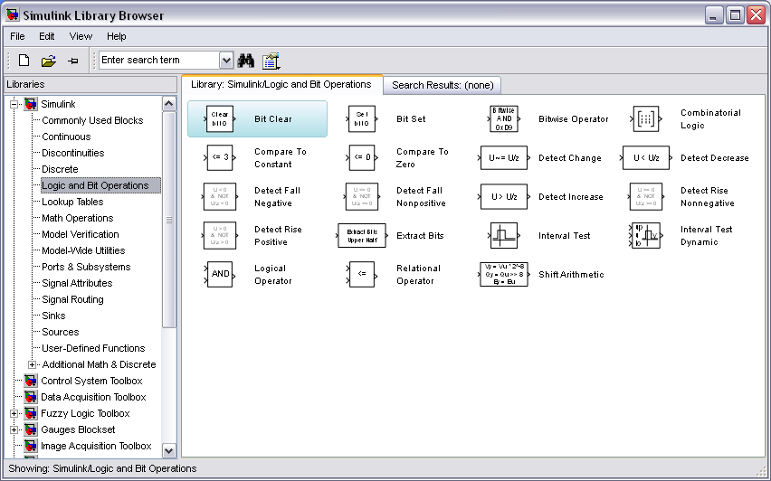
Bit Clear
The Bit Clear block sets the specified bit, given by its index, of the stored integer to zero.
Bit Set
The Bit Set block sets the specified bit of the stored integer to one.
Bitwise Operator
The Bitwise Operator block performs the bitwise operation that you specify on one or more operands.
Combinatorial Logic
The Combinatorial Logic block implements a standard truth table for modeling programmable logic arrays (PLAs), logic circuits, decision tables, and other Boolean expressions.
Compare To Constant
The Compare To Constant block compares an input signal to a constant.
Compare To Zero
The Compare To Zero block compares an input signal to zero.
Detect Change
The Detect Change block determines if an input does not equal its previous value.
Detect Decrease
The Detect Decrease block determines if an input is strictly less than its previous value.
Detect Fall Negative
The Detect Fall Negative block determines if the input is less than zero, and its previous value was greater than or equal to zero.
Detect Fall Nonpositive
The Detect Fall Nonpositive block determines if the input is less than or equal to zero, and its previous value was greater than zero.
Detect Increase
The Detect Increase block determines if an input is strictly greater than its previous value.
Detect Rise Nonnegative
The Detect Rise Nonnegative block determines if the input is greater than or equal to zero, and its previous value was less than zero.
Detect Rise Positive
The Detect Rise Positive block determines if the input is strictly positive, and its previous value was nonpositive.
Extract Bits
The Extract Bits block allows you to output a contiguous selection of bits from the stored integer value of the input signal.
Interval Test
The Interval Test block outputs TRUE if the input is between the values specified by the Lower limit and Upper limit parameters.
Interval Test Dynamic
The Interval Test Dynamic block outputs TRUE if the input is between the values of the external signals up and lo. The block outputs FALSE if the input is outside those values. The output of the block when the input is equal to the signal up or the signal lo is determined by whether the boxes next to Interval closed on left and Interval closed on right are selected in the dialog box.
Shift Arithmetic
The Shift Arithmetic block can shift the bits or the binary point of an input signal, or both.
Math Operations
Math Operations Blocks are used to Perform math operations. Double-click on the Math Operations icon in the main Simulink window to bring up the Math Operations window.
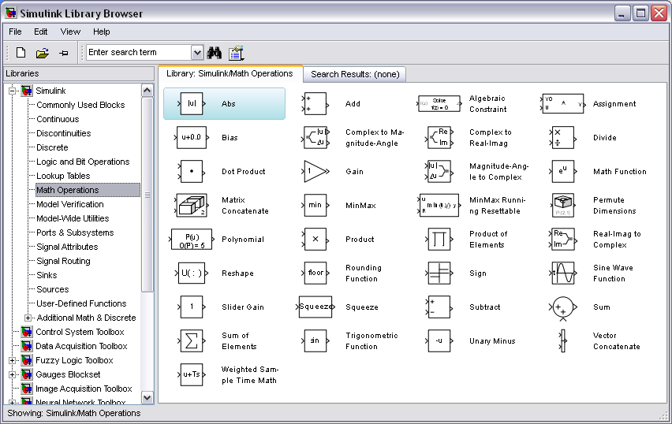
Abs
The Abs block outputs the absolute value of the input.
Algebraic Constraint
The Algebraic Constraint block constrains the input signal f(z) to zero and outputs an algebraic state z.
Assignment
The Assignment block assigns values to specified elements of the signal.
Bias
The Bias block adds a bias, or offset, to the input signal according to
(1)
where U is the block input and Y is the output.
Complex to Magnitude-Angle
The Complex to Magnitude-Angle block accepts a complex-valued signal of type double or single.
Complex to Real-Image
The Complex to Real-Imag block accepts a complex-valued signal of any data type that Simulink supports, including fixed-point data types.
Divide
The Divide block outputs the result of dividing its first input by its second.
Dot Product
The output is equal to the dot product of two vector signals.
Find
The Find block locates all nonzero elements of the input signal and returns the linear indices of those elements.
Magnitude-Angle to Complex
The Magnitude-Angle to Complex block converts magnitude and phase angle inputs to a complex output.
Math Function
The Math Function block performs numerous common mathematical functions.
MinMax
The MinMax block outputs either the minimum or the maximum element or elements of the inputs.
MinMax Running Resettable
The MinMax Running Resettable block outputs the minimum or maximum of all past inputs u.
Permute Dimensions
The block reorders the elements of the input signal so that they are in the order you specify in the Order parameter.
Polynomial
You define a set of polynomial coefficients in the form that the MATLAB polyval command accepts. The block evaluates P(u) at each time step for the input u.
Product
The output is equal to the product of the inputs. The number of inputs can be specified.
Product of Elements
The Product of Elements block inputs one scalar, vector, or matrix.
Real-Imag to Complex
The Real-Imag to Complex block converts real and/or imaginary inputs to a complex-valued output signal.
Reshape
The Reshape block changes the dimensionality of the input signal to a dimensionality that you specify, using the block's Output dimensionality parameter.
Rounding Function
The Rounding Function block applies a rounding function to the input signal to produce the output signal.
Sine Wave Function
This block is the same as the Sine Wave block that appears in the Sources library.
Slider Gain
This multiplies the input by a scalar constant which is specified by moving a slider on the screen as shown below. The limits of the slider can be specified.
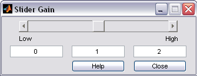
Squeeze
The Squeeze block removes singleton dimensions from its multidimensional input signal.
Sum, Add, Subtract, Sum of Elements
The Sum block performs addition or subtraction on its inputs. This block can add or subtract scalar, vector, or matrix inputs. It can also collapse the elements of a signal.
Vector Concatenate, Matrix Concatenate
The Concatenate block concatenates the signals at its inputs to create an output signal whose elements reside in contiguous locations in memory.
Sinks
Sink Blocks are used to display or output signals. Double-click on the Sinks icon in the main Simulink window to bring up the Sinks window.
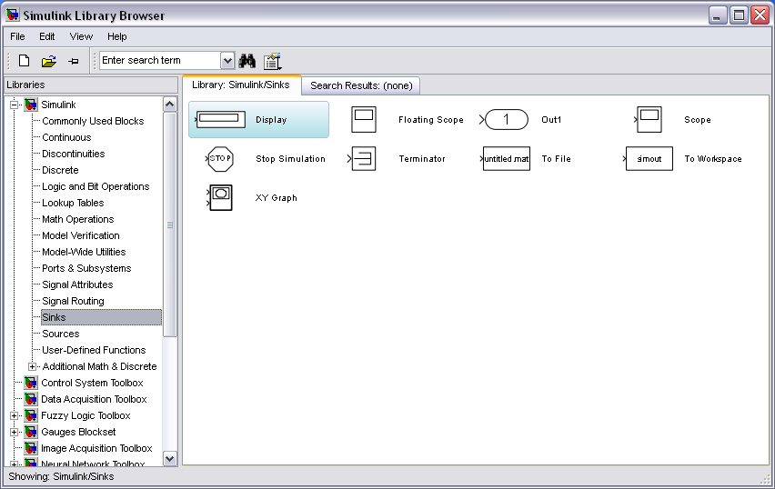
Notice that all of the sink blocks have inputs and no outputs. Most have a single input.
Display
The Display Sink Block is a digital readout of a signal at the current simulation time.
Scope
The Scope Sink Block was described earlier. It is used to display a signal as a function of time.
Stop Simulation
This is a special control block which is triggered to stop the current simulation when its input is non-zero.
To File
The To File Sink Block saves a signal to a .mat file in the same way that the From File Source Block reads from a file. The sampling time can be specified, but is not necessary.
To Workspace
The To Workspace Sink Block stores a signal in a specified workspace variable. Unlike the To File Sink Block, the time is not saved in the variable, and must be stored separately.
XY Graph
The XY Graph Sink Block plots one signal against another. It is useful for phase-plane plots, etc.
Sources
Source Blocks are used to generate signals. Double-click on the Sources icon in the main Simulink window to bring up the Sources window.
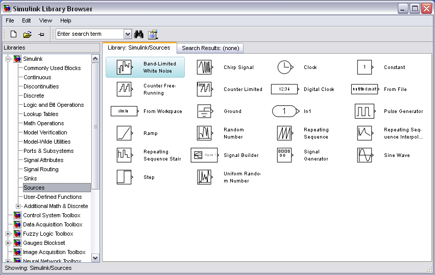
Notice that all of the source blocks have a single output and no inputs. While parameters in each of these blocks in the library can be modified by double-clicking the block, it is best to not modify the blocks until they have been copied into a model window.
Band-Limited White Noise
The Band-Limited White Noise Source Block generates a random signal which changes at a specified sample period. The strength of the signal and a random number seed can also be specified.
Chirp Signal
The Chirp Signal Source Block generates a sinusoidal signal which scans over a range of frequencies. The initial and final frequencies as well as the scan time can be specified. The amplitude is always 1, and the chirp signal repeats itself after each frequency scan.
Clock
The Clock Source Block generates a signal equal to the current time in the simulation. This is useful when the output of a simulation is exported to MATLAB but occurs at uneven time steps. The clock's output reflects the times at which the other signals outputs occur.
Counter Free-Running
The Counter Free-Running block counts up until reaching the maximum value,
, where Nbits is the number of bits. Then the counter overflows to zero and begins counting up again.
Counter Limited
The Counter Limited block counts up until the specified upper limit is reached. Then the counter wraps back to zero, and restarts counting up.
Digital Clock
The Digital Clock Source Block generates a strictly periodic time signal at a specified sampling interval.
Enumerated Constant
The Enumerated Constant block outputs a scalar, array, or matrix of enumerated values.
From File
The From File Source Block outputs a signal taken from a specified .mat file. A matrix saved in MATLAB as a .mat file will become a signal where the first row of the matrix specifies the time values. This is similar to the Repeating Sequence Source Block.
From Workspace
The From Workspace Source Block is identical to the From File Source Block except the values are taken from a variable (or expression) in the MATLAB Workspace.
Pulse Generator
The Pulse Generator Source Block generates a pulse train of varying duty cycle. The signal switches between 0 and the specified value starting at a particular time. The Period, Duty Cycle, Amplitude, and Start Time can be specified.
Ramp
The Ramp Source Block generates a signal which is initially constant and begins to increase (or decrease) at a constant rate at a specified time. The slope, start time, and initial output can be specified.
Random Number
The Random Number Source Block generates a sequence of random numbers generated with the specified random number seed. Because of the seed, the same sequence can be applied to more than one simulation.
Repeating Sequence
An arbitrary set of points (t,y) can be specified. These points are entered as a vector specifying the time values, and a vector specifying the corresponding output values at those times. The output is linearly interpolated between the specified time values. At the last time value, the output immediately starts over, possibly with a discontinuous transition.
Repeating Sequence Interpolated
The Repeating Sequence Interpolated block outputs a discrete-time sequence and then repeats it.
Repeating Sequence Stair
The Repeating Sequence Stair block outputs and repeats a stair sequence that you specify with the Vector of output values parameter.
Signal Generator
The Signal Generator Source Block is a general-purpose source which encompasses some of the other blocks' functions. It generates periodic waveforms such as sine, square, and sawtooth waves as well as a random signal. Drag this block from the Sources window to your model window.
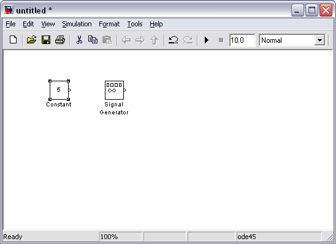
By default, the Signal Generator generates a sine wave with an amplitude of 1 and a frequency of 1 Hz. To change this, double-click the Signal Generator in your model window to bring up the following dialog box.
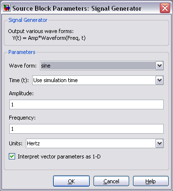
The Amplitude and Frequency can be changed in this dialog box, as well as the type of waveform. To change the waveform, click on the Waveform field to bring up a list of possible waveforms.
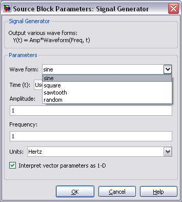
The desired waveform can be selected from this list.
Sine Wave
The Sine Wave Source Block generates a sinusoidal signal. The Amplitude and Frequency can be specified, as well as the Phase (unlike the Signal Generator). There is a fourth parameter, the Sample Time, which can be used to force the Sine Wave Source to operate in discrete-time mode.
Step
As described earlier, the Step Source Block generates a step function. The initial and final values can be specified, as well as the step time.
Uniform Random Number
The Uniform Random Number block generates uniformly distributed random numbers over an interval that you specify.